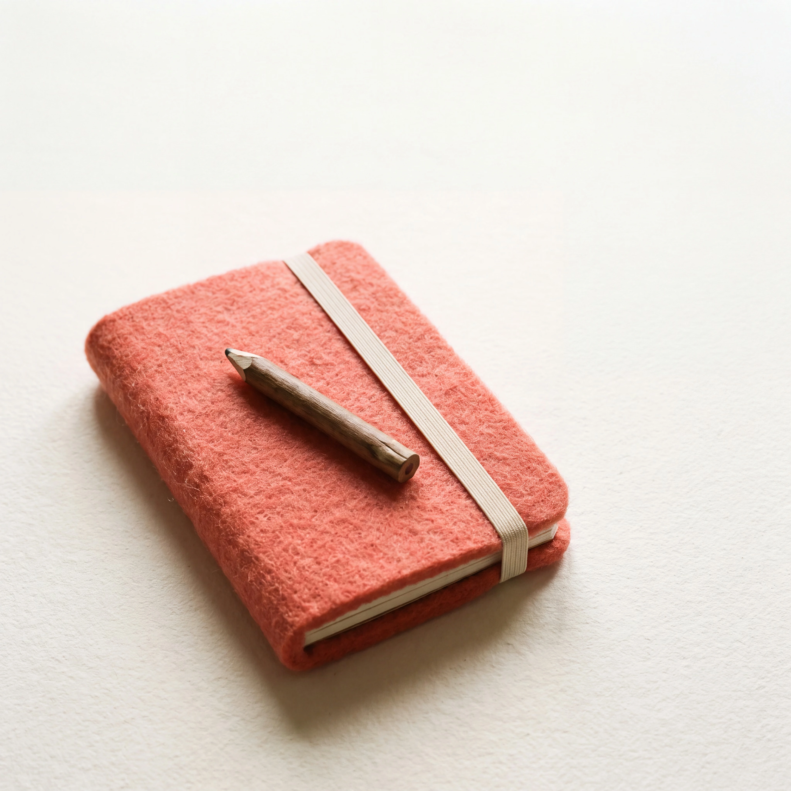
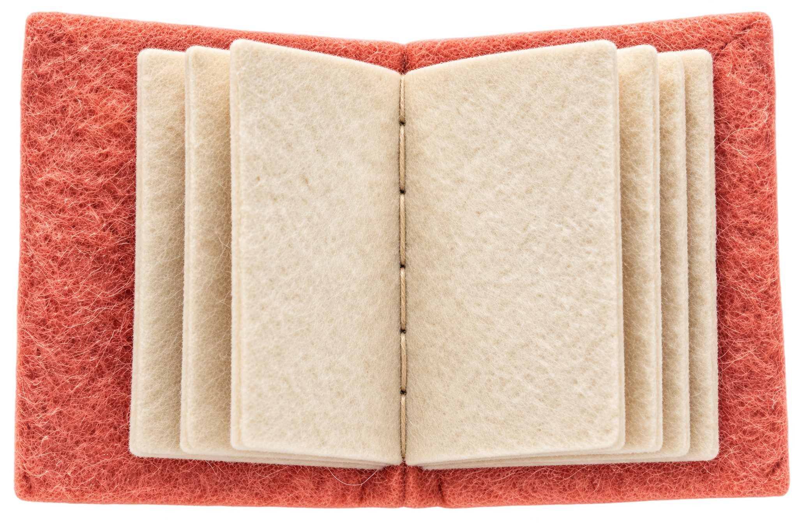
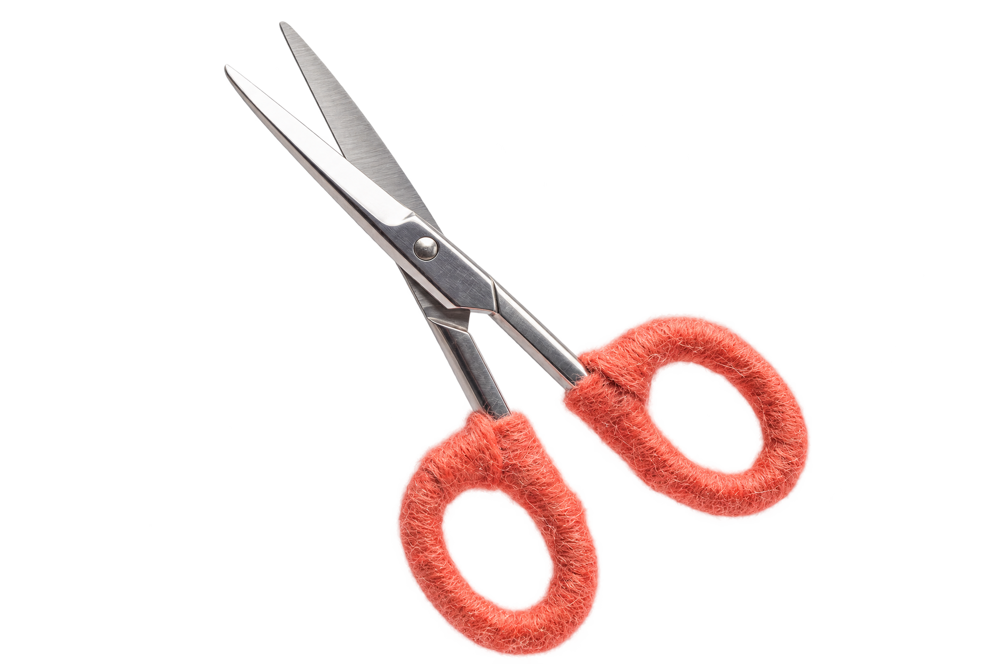

SHIFT / 1
고객 요청이 바뀌면
휴대폰 안내 이미지에서
A4 배포물로 바뀐다면?
“이번엔 종이로 나눠 줄게요.”
1인 사업자 · 가상 고객의 제안 수정 실습

SHIFT / 1
휴대폰 안내 이미지에서
A4 배포물로 바뀐다면?
“이번엔 종이로 나눠 줄게요.”
1인 사업자 · 가상 고객의 제안 수정 실습
SHIFT / 2
휴대폰으로 읽는
안내 이미지 한 장
“모임에서 할 일을
한눈에 보여 주세요.”
이전 제안을 남겨 두고 비교해요.

SHIFT / 3
휴대폰 화면에서
현장 A4 배포로
“파일 제작과 인쇄 중
어디까지 필요하세요?”
형식이 바뀌면 맡을 일도 다시 확인해요.

SHIFT / 4
같은 내용인가요?
확정 문구와 맡을 범위는요?
“인쇄는 직접 할게요.
내용은 같습니다.”
가상 답변: 최종 문구·로고는 고객 제공

SHIFT / 5
확정 문구·로고로
A4 안내 PDF 한 쪽 제작
“인쇄와 현장 배포는
고객이 맡습니다.”
출력한 한 쪽의 읽힘을 확인한 뒤 전달

SHIFT / 6
바뀐 조건 → 달라질 결과물
그대로인 범위 → 새 확인
“이번 수정에서
달라지는 것은 ___입니다.”
본문에서 완성 예시와 네 줄 틀을 복사해요.